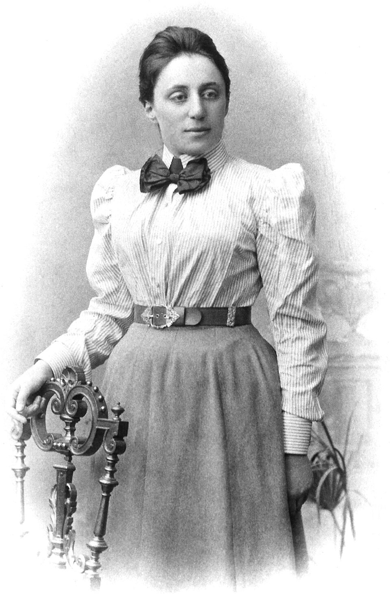

Algebraic geometry studies the solution sets of systems of polynomial equations. An introductory course meets the subject in its most classical form: the coordinate plane, lines as solution sets of linear equations, circles as solution sets of x² + y² = r², and intersection points computed by solving two equations simultaneously. That is exactly where the subject began, with Descartes and Fermat in the 1630s. What makes algebraic geometry a field of research rather than a chapter of analytic geometry is the discovery that the dictionary between equations and shapes is far deeper than it first appears. Ideals of polynomial rings correspond to geometric objects, prime ideals to irreducible objects, maximal ideals to points, ring homomorphisms to maps, and field extensions to coverings. Once this dictionary is in place, theorems can be proved on whichever side of it they are easiest.
This course develops the classical theory over a field k, usually algebraically closed, with a strong emphasis on plane curves. The algebraic side rests on three nineteenth- and early twentieth-century pillars: Hilbert's basis theorem (1890), Hilbert's Nullstellensatz (1893), and Emmy Noether's theory of ideals in rings with the ascending chain condition (1921). The geometric side culminates in three classical theorems about curves: Bézout's theorem on the number of intersection points of two plane curves, the chord-and-tangent group law on a plane cubic, and the degree–genus formula relating the degree of a smooth plane curve to the topology of its Riemann surface. The last lesson indicates how Grothendieck's theory of schemes (1960s) recasts everything in a form that also covers number theory.
Prerequisites are a first graduate course in algebra: rings, ideals, quotient rings, prime and maximal ideals, polynomial rings, field extensions, and the basic facts about unique factorization in k[x₁, …, xₙ]. Some familiarity with point-set topology and with complex analysis (for the Riemann surface remarks) is helpful but not essential. Throughout, k denotes a field, k̄ its algebraic closure, and k[x] = k[x₁, …, xₙ] the polynomial ring in n variables. Proofs are given in full except where explicitly labelled as sketches; in those cases a standard reference is indicated by name.
In this course, you will:
- 1.Define affine algebraic sets and learn the basic operations V(·) and I(·)
- 2.Prove Hilbert's basis theorem and use it to show every algebraic set is cut out by finitely many equations
- 3.Study the Zariski topology, irreducibility and the decomposition into irreducible components
- 4.Prove the weak and strong forms of Hilbert's Nullstellensatz and set up the ideal–variety dictionary
- 5.Work with coordinate rings, morphisms and rational maps, and decide when two varieties are isomorphic
- 6.Classify conics, parametrize them rationally, and derive all Pythagorean triples from the unit circle
- 7.Locate singular points with partial derivatives and compute tangent cones and multiplicities
- 8.Pass to projective space, homogenize equations and compute points at infinity
- 9.Define intersection multiplicity and use Bézout's theorem to count intersections exactly
- 10.Put smooth cubics into Weierstrass form, compute discriminants and j-invariants
- 11.Construct the group law on an elliptic curve and compute with it over ℚ and over finite fields
- 12.Compute the genus of plane and hyperelliptic curves via the degree–genus formula and Riemann–Hurwitz
- 13.Glimpse the language of schemes: Spec of a ring, generic points and nilpotents
Figures


Contents
Affine Algebraic Sets Lesson 2
Ideals, Noetherian Rings and Hilbert's Basis Theorem Lesson 3
The Zariski Topology and Irreducible Components Lesson 4
Hilbert's Nullstellensatz Lesson 5
Coordinate Rings, Morphisms and Rational Maps Lesson 6
Conics, Rational Parametrization and Pythagorean Triples Lesson 7
Singular Points, Tangent Cones and Multiplicity Lesson 8
Projective Space and Projective Closure Lesson 9
Intersection Multiplicity and Bézout's Theorem Lesson 10
Plane Cubics and the Weierstrass Form Lesson 11
The Group Law on an Elliptic Curve Lesson 12
Genus and the Degree–Genus Formula Lesson 13
A Glimpse of Schemes Problem Set
60 problems Assessment
Randomly generated questions
Image sources
- Figure 1 · ECClines. By SuperManu. CC BY-SA 3.0. From Wikimedia Commons: https://commons.wikimedia.org/wiki/File:ECClines.svg
- Figure 2 · Noether. By Unknown author. Public domain. From Wikimedia Commons: https://commons.wikimedia.org/wiki/File:Noether.jpg